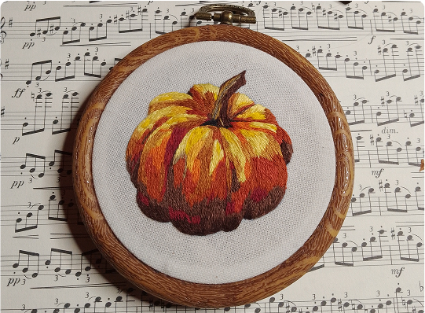
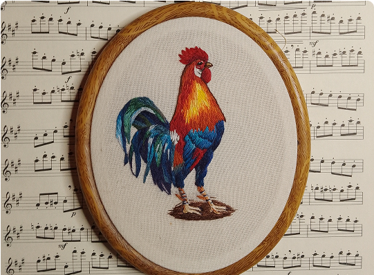

Nuestra Colección
En Birdie Borda, cada pieza es un pequeño universo bordado a mano. Nuestra colección celebra la naturaleza, los detalles del día a día y la belleza de lo imperfecto. Aquí encontrarás una selección de obras agrupadas por temática, pensadas para emocionar, decorar y conectar con lo esencial.
-
Verduras
Inspirados en huertas caseras y mercados locales, estos cuadros bordados capturan la frescura y color de los vegetales. Ideales para cocinas y amantes de la vida natural.
-
Animales
Desde gatos curiosos hasta aves en vuelo, esta colección presenta animales bordados con expresividad y ternura. Perfectos para accesorios, cuadros o regalos con alma.
-
Flores

Un homenaje al lenguaje silencioso de las flores. Texturas delicadas y paletas suaves que evocan jardines secretos y emociones sutilezas.
-
Rostros

Fragmentos de humanidad en hilo. Retratos que mezclan lo real y lo simbólico, con bordados expresivos que cuentan historias personales.
-
Paisajes

Montañas, cielos y horizontes bordados desde la memoria y el deseo. Piezas contemplativas que invitan a viajar sin moverse del lugar.
-
Abstracto
Formas libres, colores vibrantes y composiciones espontáneas dan vida a esta colección abstracta. Una invitación a sentir más allá de lo figurativo, donde cada puntada es intuición pura.